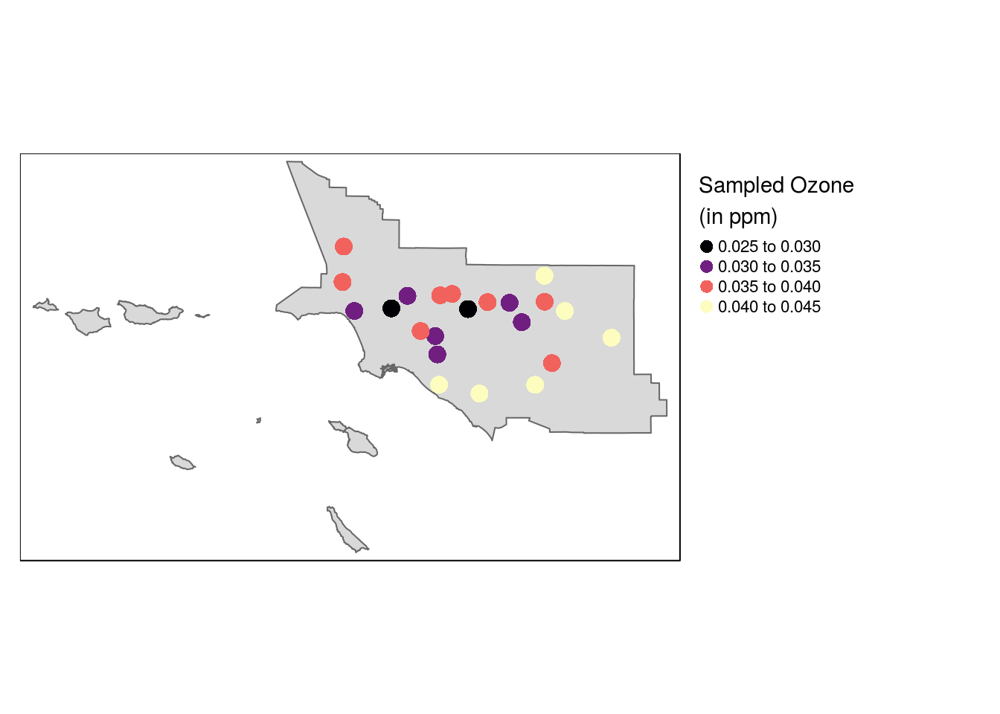
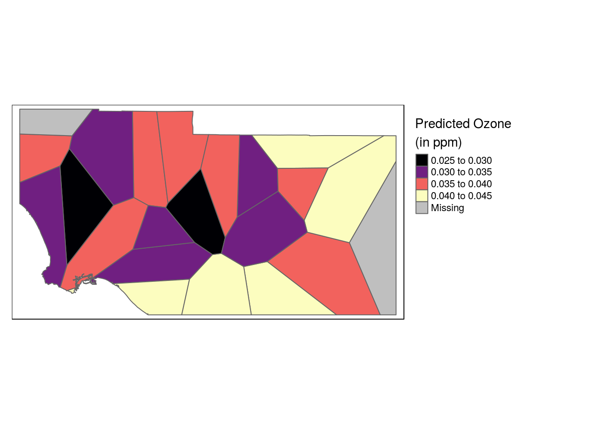
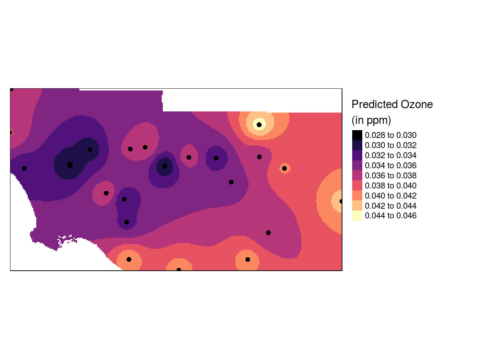
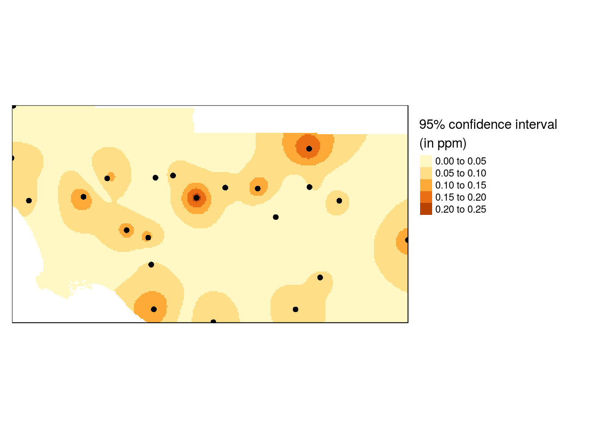

Spatial Interpolation of Particulate Matter in Southern California
Data Preparation
libraries
library(rgdal)
library(gstat)
library(sp)
library(spatstat) # Used for the dirichlet tessellation function
library(maptools) # Used for conversion from SPDF to ppp
library(raster) # Used to clip out thiessen polygons
library(tmap)working directory
dir <- "/home/connor/schoolwork_2020/first_semester/geog418/assignments/assignment4/R-Sinterpolation"
setwd(dir)dataset 1
#DATASET 1
#Read the pollution csv dataset.
ozone = read.csv("./data/OZONE_PICKDATA_2016-4-30.csv", header = T, sep = ",")
#Examine the first several rows of the ozone dataset.
head(ozone)## site date start_hour value variable units
## 1 2077 2016-04-01 0 0.026 OZONE Parts Per Million ( ppm )
## 2 2077 2016-04-01 1 0.023 OZONE Parts Per Million ( ppm )
## 3 2077 2016-04-01 2 0.024 OZONE Parts Per Million ( ppm )
## 4 2077 2016-04-01 3 0.020 OZONE Parts Per Million ( ppm )
## 5 2077 2016-04-01 4 0.016 OZONE Parts Per Million ( ppm )
## 6 2077 2016-04-01 5 0.015 OZONE Parts Per Million ( ppm )
## quality prelim name latitude longitude obs_type
## 1 0 y Redlands-Dearborn 34.05975 -117.1473 H
## 2 0 y Redlands-Dearborn 34.05975 -117.1473 H
## 3 0 y Redlands-Dearborn 34.05975 -117.1473 H
## 4 0 y Redlands-Dearborn 34.05975 -117.1473 H
## 5 0 y Redlands-Dearborn 34.05975 -117.1473 H
## 6 0 y Redlands-Dearborn 34.05975 -117.1473 H
## monitoring_id flag
## 1 NA NA
## 2 NA NA
## 3 NA NA
## 4 NA NA
## 5 NA NA
## 6 NA NAdataset 2
#DATASET 2
#Read the monitoring station spatial dataset as an OGR data object.
monitor = readOGR(dsn = "./data", layer = "airmonitoringstations")## OGR data source with driver: ESRI Shapefile
## Source: "/home/connor/schoolwork_2020/first_semester/geog418/assignments/assignment4/R-Sinterpolation/data", layer: "airmonitoringstations"
## with 296 features
## It has 12 fields#Extract the monitoring stations for the South Coast (SC)
SC.monitor = monitor[monitor$AIRBASIN %in% c("South Coast"),]
#Reproject the data to a suitable projection. Here we use a UTM projection because of the scale of the analysis.
SC.monitor.t = spTransform(SC.monitor, CRS("+init=epsg:26911"))dataset 3
#DATASET 3
#Read the California Air Basin spatial dataset.
Ca.AirBasin = readOGR(dsn = "./data", layer = "CaAirBasin")## OGR data source with driver: ESRI Shapefile
## Source: "/home/connor/schoolwork_2020/first_semester/geog418/assignments/assignment4/R-Sinterpolation/data", layer: "CaAirBasin"
## with 15 features
## It has 5 fields
## Integer64 fields read as strings: CAABA_ CAABA_ID#Extract the South Coast air basin from the spatial dataset.
SC.AirBasin = Ca.AirBasin[Ca.AirBasin$NAME %in% c("South Coast"),]
#Reproject the South Coast air basin spatial dataset to match the projeciton of the monitoring station dataset.
SC.AirBasin.t = spTransform(SC.AirBasin, CRS("+init=epsg:26911"))mean/max ozone
#Calculate the mean and max ozone level for each site for all readings.
mean.ozone = aggregate(value ~ site, ozone, mean)
max.ozone = aggregate(value ~ site, ozone, max)
#Join the mean and max ozone values to their respective monitoring stations. In doing so, you will need to rename the
#first column of the monitoring data to site in order to have a unique name to match the two datasets.
names(SC.monitor.t)[1] ="site"
#Merge the the monitoring station shapefile with the ozone data using the site column.
mrg.tab.mean <- sp::merge(SC.monitor.t, mean.ozone, by = "site", all.x = FALSE)
mrg.tab.max <- sp::merge(SC.monitor.t, max.ozone, by = "site", all.x = FALSE)
#Create a max and a mean spatialPointDataFrame.
ozone.mean.spdf = na.omit(mrg.tab.mean)
ozone.max.spdf = na.omit(mrg.tab.max)visualize!
# Load and observe ozone data
tm_shape(SC.AirBasin.t) +
tm_polygons() +
tm_shape(ozone.mean.spdf) +
tm_dots(col="value", palette = "magma",
title="Sampled Ozone \n(in ppm)", size=0.7) +
tm_legend(legend.outside=TRUE)
Thiessen Polygons
init surface, set projection
# Create a tessellated surface
th <- as(dirichlet(as.ppp(ozone.mean.spdf)), "SpatialPolygons")
proj4string(th) <- proj4string(ozone.mean.spdf)create surface
# The tessellated surface does not store attribute information
# from the point data layer. We'll use the over() function (from the sp
# package) to join the point attributes to the tesselated surface via
# a spatial join. The over() function creates a dataframe that will need to
# be added to the `th` object thus creating a SpatialPolygonsDataFrame object
th.z <- over(th, ozone.mean.spdf, fn=mean)
th.spdf <- SpatialPolygonsDataFrame(th, th.z)
# Finally, we'll clip the tessellated surface to the South Coast Air Basin boundaries
th.clp <- raster::intersect(SC.AirBasin.t,th.spdf)visualize!
# Map the data
tm_shape(th.clp) +
tm_polygons(col="value", palette="magma",
title="Predicted Ozone \n(in ppm)") +
tm_legend(legend.outside=TRUE)
IDW
grid
# Create an empty grid where n is the total number of cells
grd <- as.data.frame(spsample(ozone.mean.spdf, "regular", n=50000))
names(grd) <- c("X", "Y")
coordinates(grd) <- c("X", "Y")
gridded(grd) <- TRUE # Create SpatialPixel object
fullgrid(grd) <- TRUE # Create SpatialGrid object
proj4string(grd) <- proj4string(SC.monitor.t)
P.idw <- gstat::idw(value ~ 1, ozone.mean.spdf, newdata=grd, idp=2.0)
r <- raster(P.idw)
r.m <- mask(r, SC.AirBasin.t)visualize!
tm_shape(r.m) +
tm_raster(n=10,palette = "magma",
title="Predicted Ozone \n(in ppm)") +
tm_shape(ozone.mean.spdf) + tm_dots(size=0.2) +
tm_legend(legend.outside=TRUE)
populate IDW
# Leave-one-out validation routine
IDW.out <- vector(length = length(ozone.mean.spdf))
for (i in 1:length(ozone.mean.spdf)) {
IDW.out[i] <- gstat::idw(value ~ 1, ozone.mean.spdf[-i,], ozone.mean.spdf[i,], idp=0.5)$var1.pred
}plot differences
# Plot the differences
OP <- par(pty="s", mar=c(4,3,0,0))
plot(IDW.out ~ ozone.mean.spdf$value, asp=1, xlab="Observed", ylab="Predicted", pch=16,
col=rgb(0,0,0,0.5))
abline(lm(IDW.out ~ ozone.mean.spdf$value), col="red", lw=2,lty=2)
abline(0,1)
par(OP)
sqrt( sum((IDW.out - ozone.mean.spdf$value)^2) / length(ozone.mean.spdf))## [1] 0.004261506jacknife
# Implementation of a jackknife technique to estimate a confidence interval at each unsampled point.
# Create the interpolated surface
img <- gstat::idw(value~1, ozone.mean.spdf, newdata=grd, idp=2.0)
n <- length(ozone.mean.spdf)
Zi <- matrix(nrow = length(img$var1.pred), ncol = n)
# Remove a point then interpolate (do this n times for each point)
st <- stack()
for (i in 1:n){
Z1 <- gstat::idw(value~1, ozone.mean.spdf[-i,], newdata=grd, idp=2.0)
st <- addLayer(st,raster(Z1,layer=1))
# Calculated pseudo-value Z at j
Zi[,i] <- n * img$var1.pred - (n-1) * Z1$var1.pred
}
# Jackknife estimator of parameter Z at location j
Zj <- as.matrix(apply(Zi, 1, sum, na.rm=T) / n )
# Compute (Zi* - Zj)^2
c1 <- apply(Zi,2,'-',Zj) # Compute the difference
c1 <- apply(c1^2, 1, sum, na.rm=T ) # Sum the square of the difference
# Compute the confidence interval
CI <- sqrt( 1/(n*(n-1)) * c1)
# Create (CI / interpolated value) raster
img.sig <- img
img.sig$v <- CI /img$var1.pred
# Clip the confidence raster to Southern California
r <- raster(img.sig, layer="v")
r.m <- mask(r, SC.AirBasin.t)idw plot 2
# Plot the map
tm_shape(r.m) + tm_raster(n=7,title="95% confidence interval \n(in ppm)") +
tm_shape(ozone.mean.spdf) + tm_dots(size=0.2) +
tm_legend(legend.outside=TRUE)